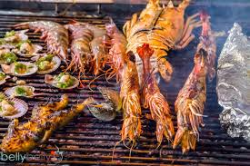

🔥 Dive Into the Flavors of Australia! 🔥
🥪 Vegemite on Toast

Ah, Vegemite—the salty, umami-packed spread that divides opinions! Aussies swear by it, spreading just the right amount on buttered toast. A bite of this powerhouse snack will tell you if you’ve got the true Aussie spirit! Dare to try? 🏆😆
🍰 Pavlova - A Dessert Fit for a Celebration!

Light, crispy, creamy, and fruity—Pavlova is the queen of Australian desserts! Topped with fresh berries and passionfruit, this melt-in-your-mouth meringue delight is a party favorite. One bite, and you’ll see why Aussies love this sweet masterpiece! 🍓🥂
🥧 Meat Pies - Australia’s On-the-Go Comfort Food!

Golden, flaky pastry wrapped around rich, meaty goodness—nothing screams “Aussie classic” like a meat pie! Whether you're at a footy game or grabbing a snack on the go, this hand-sized delight is pure comfort in every bite! ⚽🥧
🦐 Barbecued Seafood - Fresh Off the Aussie Grill!
Nothing beats the smoky aroma of fresh seafood sizzling on the barbie! From juicy prawns to tender barramundi, Aussie beachside barbecues are all about good food, good vibes, and the perfect coastal feast. Fire up the grill and get ready for flavor-packed fun! 🌊🔥